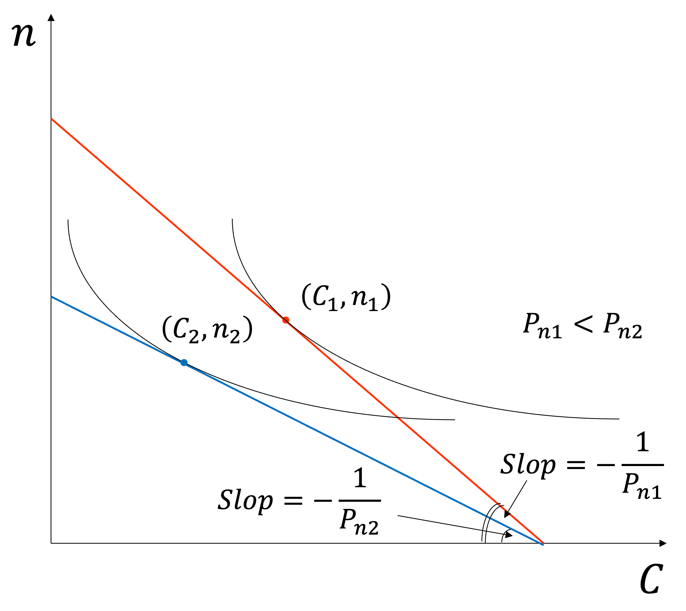
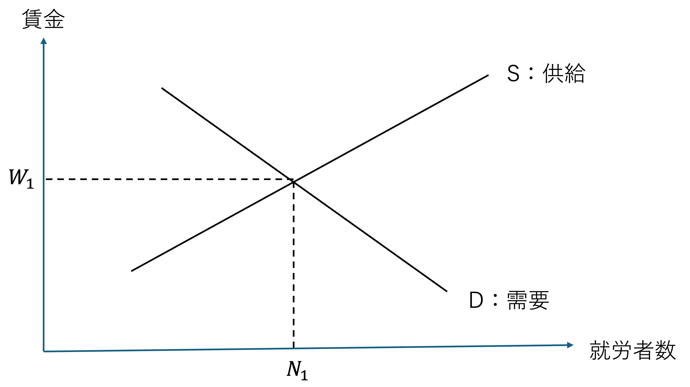
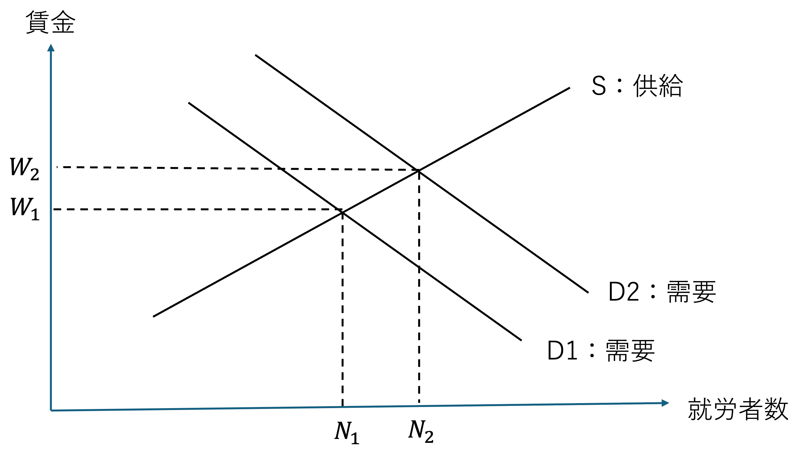

6 教育需要
6.1 学習目標
- 子どもの「量」と「質」のトレードオフ（量—質モデル）について理解する。
- 教育需要における不確実性の役割と、教育のオプション・バリューという概念を理解する。
- ドロップアウト・モデルの考え方を理解する。
- 補習教育・大学受験における不確実性の働きを理解する。
- 「学び直し」に関連する諸概念（生涯学習・成人学習・継続学習・リカレント学習）の違いを理解する。
- 「学び直し」を説明する経済学理論（産業構造論・ミクロ経済理論・人的資本論）を理解する。
- 労働市場の流動化が「学び直し」需要にどのような影響を与えるかを理解する。
6.2 親による教育需要
子どもの「量」と「質」
前節では、教育需要の決定主体を本人（子ども）として考えてきました。しかし現実には、特に子どもが幼い間は、親が教育水準を実質的に決定しています。ここでは、親が子どもの数（量）と教育水準（質）をどのように同時に決めるかを、経済モデルを使って考えていきます。
日本では子どもの教育費が家計を圧迫する程度が強く、旧厚生省（現厚生労働省）の『厚生白書』（1998年版）によれば、妻が理想の数の子どもを持とうとしない理由として「子どもを育てるのにお金がかかるから」が37.0%、「子どもの教育にお金がかかるから」が33.8%に達しています（複数回答）。こうした事実は、子どもの「数」と「教育の質」の間に、親の家計を通じたトレードオフが存在することを示唆しています。
以下では、まず最もシンプルな「子どもの価格が固定されている」モデルから出発し、次にBecker and Lewis（1973）が提示した「質と量が相互に影響しあう」モデルへと進み、最後に「親の利他心」を組み込んだモデルを学びます。
モデル1：子どもの価格が固定されている場合
まず最も基本的なモデルを考えましょう。親は自分自身の消費 \(C\) と、子どもの数 \(n\) から効用を得るとします。子ども1人を持つための費用（影の価格）を \(P_n\) とすると、親の所得 \(I\) に関する予算制約式は、
\[C + P_n \cdot n = I\]
となります。つまり、「自分の消費と子どもへの支出の合計が所得を超えられない」という制約です。親はこの制約のもとで、
\[\max \; u(C) + v(n)\]
を最大化します。ここで \(u(\cdot)\) は親自身の消費から得られる効用、\(v(\cdot)\) は子どもの数から得られる効用です。
一階条件（最適化の条件）
ラグランジュ法を用いると、最適解における一階条件は、
\[u'(C) = \frac{v'(n)}{P_n}\]
となります。
これを言葉で解釈しましょう。左辺 \(u'(C)\) は「自分の消費を1単位増やしたときに得られる限界効用」です。右辺 \(v'(n)/P_n\) は「子どもを1人増やすことで得られる限界効用を、子供1人の費用 \(P_n\) 円で割り、1円当たりの限界効用に換算したもの」です。最適な選択では、1円を自分の消費に使っても子どもに使っても、得られる効用の増分が等しくなるように配分するということです。
問題の設定の確認
最大化問題は、
\[\max \; u(C) + v(n) \quad \text{s.t.} \quad C + P_n \cdot n = I\]
ステップ1：ラグランジアンを作る
制約付き最大化を解くために、ラグランジアン \(L\) を以下のように定義します。
\[L = u(C) + v(n) + \lambda (I - C - P_n \cdot n)\]
\(\lambda\) はラグランジュ乗数で、「予算が1円増えたときに効用がどれだけ増えるか（所得の限界効用）」を表します。
ステップ2：\(C\) と \(n\) それぞれで偏微分してゼロとおく
\(C\) で偏微分：
\[\frac{\partial L}{\partial C} = u'(C) - \lambda = 0 \quad \Rightarrow \quad u'(C) = \lambda \quad \cdots (1)\]
\(n\) で偏微分：
\[\frac{\partial L}{\partial n} = v'(n) - \lambda P_n = 0 \quad \Rightarrow \quad \lambda = \frac{v'(n)}{P_n} \quad \cdots (2)\]
ステップ3：\(\lambda\) を消去する
\((1)\) と \((2)\) はどちらも \(\lambda\) に等しいので、
\[u'(C) = \frac{v'(n)}{P_n}\]
が得られます。
経済的な意味
この式は「最適な配分では、最後の1円をどちらに使っても得られる効用の増加が等しい」ということを表しています。
- 左辺 \(u'(C)\)：消費 \(C\) に1円使ったときの限界効用
- 右辺 \(v'(n)/P_n\)：子どもを1人増やすには \(P_n\) 円かかるので、1円当たりに換算した限界効用
たとえば今、\(u'(C) > v'(n)/P_n\) だとしましょう。これは「今の状況では、1円を自分の消費に使う方が子どもに使うより効用が高い」ということを意味します。このとき、合理的な親は子どもへの支出を少し減らして自分の消費に回すはずです。
しかし消費を増やすと \(u'(C)\) は下がっていきます（限界効用逓減）。子どもへの支出を減らすと \(v'(n)/P_n\) は上がっていきます（子どもの数が減るから）。この調整が続き、最終的に両者が等しくなったところで調整が止まります。これが最適解です。
つまりこの条件は「もうこれ以上配分を変えても効用を増やせない状態」を表しており、経済学では最適配分の一般原則として、あらゆる消費者理論・生産者理論に共通して登場します。
このモデルから導かれる含意
- 価格効果：\(P_n\) が上昇する（子どもを持つコストが高くなる）と、子どもへの需要 \(n\) は減少します。これは通常の財と同じ、需要の法則です。子ども1人当たりにかかる費用が高くなれば、子どもの数を減らすのは合理的な行動と言えます。

- 所得効果：所得 \(I\) が増加すると、子どもが正常財であれば \(n\) は増加します。ただし、現実の少子化が示すように、所得と子ども数の関係は単純ではなく、後のモデルで修正が加えられます。
このモデルは分かりやすいですが、子どもの「質」（一人ひとりへの教育水準）が固定されているという大きな制約があります。現実には、親は子どもの数と教育の質を同時に決定しているはずです。次のモデルではこの点を改善します。
モデル2：Becker-Lewisの量—質モデル
Becker and Lewis（1973）は、親が子どもの数 \(n\)（量）と教育水準 \(q\)（質）を同時に決定する状況を分析しました。このモデルの核心は、質と量の価格が互いに影響しあうという点にあります。
費用の構造
子どもに関する費用を3種類に分けます。
\(P_n\)：子どもの数に依存する費用（例：親の時間、基礎的な養育費）。子どもが1人増えると \(P_n\) だけかかりますが、教育の質には無関係。
\(P_q\)：子どもの質に依存するが、子どもの数に無関係な費用（例：子守する人の雇用、百科事典の購入、住む地域の選択など）。
\(P_c\)：質と量の両方に依存する費用（例：個別指導塾、私立学校の授業料、習い事）。
子ども \(n\) 人全員に質 \(q\) の教育を受けさせるときの予算制約式を考えてみましょう。
そして、出来上がった予算制約式を \(q\) 、\(n\) について解き、\(q\) と \(n\) の関係を考えてください。
予算制約式
子供の人数に応じて必要となる費用は、\(P_n \times n\)
子供の質にのみ関係する費用は、\(P_q \times q\)
子供の質と量（人数）の両方に関係する費用は、\(P_c \times q \times n\)
したがって、予算制約式全体は、以下のようになります。
\[C + P_c \cdot q \cdot n + P_n \cdot n + P_q \cdot q = I\]
この予算制約式の重要なポイント
モデル1では予算制約が \(C + P_n \cdot n = I\) という線形の式でした。しかしこのモデルでは、\(P_c \cdot q \cdot n\) という \(q\) と \(n\) の積の項が加わります。これが非常に重要な意味を持ちます。
\(q\) と \(n\) の積が予算制約に入るということは、子どもの数 \(n\) を増やすと、質 \(q\) の影の価格（実質的なコスト）が上昇することを意味します。逆に、質 \(q\) を高めると、子どもの数 \(n\) の影の価格が上昇します。つまり、質と量は互いの価格を押し上げあう関係にあります。
数式で確認しましょう。
予算制約式を \(q\) について解くと、
\[q = \frac{I - P_n \cdot n - C}{P_c \cdot n + P_q}\]
これは \(n\) が大きいほど分母が大きくなるため、実現できる \(q\) の水準が低下することを示しています。
同様に、予算制約式を \(n\) について解くと、
\[n = \frac{I - P_q \cdot q - C}{P_c \cdot q + P_n}\]
これは \(q\) が大きいほど分母が大きくなるため、実現できる \(n\) の水準が低下することを示しています。
つまり、子どもの数 \(n\) を増やせば質 \(q\) を高めるコストが上がり、質 \(q\) を高めれば子どもの数 \(n\) を増やすコストが上がります。どちらを増やそうとしても、もう一方が犠牲になるという対称的なトレードオフが成立しています。
なぜ「大きなトレードオフ」が生じるのか
モデル1では、子どもの数を増やしても教育の質の価格は変わりませんでした（線形の予算制約）。しかしモデル2では、子どもの数が増えると質の価格が高くなり、質が上がると数の価格が高くなります。この相互依存関係が、予算制約を双曲線型の非線形制約にします。
\(n\) と \(q\) の選択空間において、この双曲線型の制約のもとでは、一方のパラメータが少し変化しただけで、量から質へ（あるいは質から量へ）の大きなシフトが起きやすくなります。これが、少子化と教育費の高騰が同時進行するメカニズムの経済学的な説明です。子どもの教育費（\(P_c\)）が上昇すると、子どもの数の実質的なコストが上がり、子ども数を大幅に減らして1人当たりの教育投資を集中させるという選択が合理的になります。
6.3 不確実性と教育需要
これまでの議論では、能力や教育成果をめぐる不確実性については明示的に扱ってきませんでした。しかし、教育の収益率は事後的にはわかるものの、個別のケースではなはだ不確実なものです。
「教育需要は、教育成果や能力をめぐる不確実性があるからこそ存在する」という、やや逆説的な命題がこの節のテーマです。
教育のオプション・バリュー（option value）
- 教育を受けなければ確実に低い賃金しか得られないが、受けることによって能力が高まる可能性があります。
- この「受けなければ効果はないが、受けることによって能力が高まる可能性がある」という意味での教育の価値を、教育のオプション・バリューと呼びます。
「オプション」とは、ある行動をとる権利のことです。金融の世界では、株などを将来一定の価格で買う権利（コール・オプション）などが知られていますが、教育経済学では「教育を受けることで将来の可能性を広げる権利」という意味で使われます。
教育を受けなければ、将来の賃金や可能性はほぼ確定してしまいます。しかし教育を受けることで、「もしかしたら高い能力が開花するかもしれない」という上振れの可能性が生まれます。この「受けてみなければわからないが、受けることで得られるかもしれない追加的な価値」がオプション・バリューです。
簡単に言えば、「やってみる価値」 のことです。不確実性が高いほど、この「やってみる価値」は大きくなります。
人的資本論とオプション・バリュー
人的資本論の立場から説明した教育のオプション・バリューは次のように整理できます。
- 「大学教育を受けて能力があがるかどうかわからないが、受けないと能力があがらないのなら受けるべきだ」というのが、人的資本論から見たオプション・バリューです。
\(h\) を教育の成果の最大値とすると、教育を受けた場合の期待所得は \(w + \dfrac{h}{2}\)、受けなかった場合は \(w\) となります。
費用を \(c\)（\(0 < c < h\)）とすれば、\(\dfrac{h}{2} - c\) をネットのオプション・バリューと解釈できます。
オプション・バリューと不確実性
教育のオプション・バリューを設定したとき、教育需要にとって不確実性は決定的に重要となります。
人々が自分にとって教育がどこまで成果をあげるかまったくわからない場合、教育のオプション・バリュー \(\dfrac{h}{2}\) がコスト \(c\) を上回る限り、すべての人が教育を需要します。（やってみないと分からないからです。）
それとはまったく対照的に、すべての人が自分が教育を受けたときの成果を完全に正確に予測できるとすれば、教育を受ける人は全体のうち \(\dfrac{h-c}{h}\) にとどまります。（自分で利益がだ得ると分かっている人だけ教育を需要します。）
不確実性が高いほど教育需要は高くなることが、この単純な計算からも明らかです。
また、人々がリスク回避的であるほど、教育需要は抑制されます。
リスク回避的な場合、教育を受けた場合の期待効用にはリスク・プレミアム \(\pi\) が加わり、すべての人が教育を需要するのは \(c < \dfrac{h}{2} - \pi\) が満たされる場合に限定されます。
人々がリスク回避的であるほど教育需要が抑制されるという含意は、それゆえに政府の教育への関与が正当化されるという面もあります。
教育需要の自己冷却効果
教育には、不確実性が高いほど教育需要が高まる一方で、教育によって不確実性が軽減されると教育需要が冷却されていくという、自己冷却効果（self-cooling effect）があります。
- 自分の能力に見極めをつけた人は、いつか教育を需要しなくなります。
- その1つの姿が教育を受けることを途中でやめてしまうドロップアウトです。
- また、多くの人はある時点で学校を「卒業」し、実社会に出て行きます。
- つまり、多くの人にとって、教育需要は有限です。
6.4 ドロップアウト・モデル
不確実性が教育需要を決定し、そして教育が不確実性を引き下げ、教育需要を冷却していく状況を、より直感的に理解しやすいモデルで説明します。
モデルの前提
子どもたちが生まれながらにして「できる子」と「できない子」という2種類のグループで構成されていると仮定します。両者の比率をそれぞれ \(p\)、\(1 - p\) とします（\(0 < p < 1\)）。
- できる子：教育を受けることではじめて能力が発揮され、そのとき1だけの賃金が得られます。教育を受けなければ能力は埋もれたまま、賃金はゼロ。
- できない子：教育を受けてもその効果はなく、どちらにしても賃金はゼロ。
- 子どもがどちらであるかは、本人も親も事前には知りません。
- 教育にかかる費用は、できる子・できない子に共通で単位当たり \(c\)（\(> 0\)）。
不確実性の重要性
まず、できる子とできない子がそれぞれ自分の能力を完全に知っている場合を考えると、
- できる子は教育を受け、できない子は受けません。
- 教育需要の大きさは、できる子の比率 \(p\) にとどまります。
一方、能力の不確実性が存在する状況では、子どもは自分の能力を知らないから、教育を受けることで得られる期待賃金を、
\[p \cdot 1 + (1-p) \cdot 0 = p\]
と予想します。教育を受けなければゼロの賃金しか得られないので、この \(p\) がオプション・バリューとなります。コストが \(c\) なので、
\[p > c \quad \cdots (*)\]
であれば全員が教育を需要します（教育需要 \(= 1\)）。
能力の不確実性は教育需要の源泉です。
教育による不確実性の軽減
モデルをより現実的にすると、教育には子どもの能力を見いだすという効果があります。
教育期間を \(E\)（\(0 \leq E \leq 1\)）で表し、「自分の能力を正しく判断する確率」をこの教育期間の増加関数とし、できる子・できない子それぞれについて \(\phi(E)\)、\(\varphi(E)\) と表記すると、
\[\phi'(E) > 0, \quad \phi(0) = p, \quad \phi(1) = 1\] \[\varphi'(E) > 0, \quad \varphi(0) = 1-p, \quad \varphi(1) = 1\]
と想定します。教育を受ける前は、自分の能力を正しく判断する確率は社会全体の能力分布に対応したものとなり、教育を完了すると自分の能力は完全に正確に判断されます。
- できる子は、教育を受け続けることによって自分ができる子であることを徐々に認識するようになるため、教育を受け続けるインセンティブが強まります。
- できない子は、教育を受け続けると自分のできの悪さが次第にわかってくるので、教育を続けても意味がないという思いが高まってきます。
ドロップアウトのタイミング
できない子がドロップアウトするタイミングは、以下の条件で決まります。
\(E\) だけ教育期間が経過したとき、できない子が教育を受け続けるためには、
\[\frac{1 - \varphi(E)}{1 - E} > c \quad \cdots (4)\]
がつねに成り立っていなければなりません。この不等式の左辺は、できない子が時間当たりで評価した、教育を受け続けることのオプション・バリューです。
- \(f(E) = \dfrac{1 - \varphi(E)}{1 - E}\) とすると、\(f(0) = p > c\)、\(\displaystyle\lim_{E \to 1} f(E) = \varphi'(1)\) となります。
- \(f(E)\) が \(E\) の減少関数であれば、ある時点 \(E^*\) でできない子はドロップアウトします。
- 教育のコストが低いほど、またできる子の比率 \(p\) が高いほど、できない子が教育を受け続ける期間 \(E^*\) は長くなります。
\[E^* = \frac{p - c}{\gamma - p}\]
（\(\varphi(E)\) を2次関数として設定した場合の解。\(\gamma\) は適当な定数。）
つまり、簡単に言い換えてみると、できる子の比率 \(p\) が高いほど、できない子自身も（不確実性があるので）「自分もできるのではないか」と考え、教育を受け続ける期間 \(E^*\) は長くなり、当然ながら、コストが低いほど、教育を受け続けることの負担が小さいので、オプション・バリューがわずかでも残っている限り続ける方が得になり、教育期間は長くなります。
6.5 塾（補習教育）に対する需要
日本では、幼児・小学校段階から塾や家庭教師など、補習教育に対する需要が根強いです。ここでいう補習教育とは、ピアノや習字など一般的な教養・趣味のための教育ではなく、塾や家庭教師、通信教育などを指します。
補習教育と教育需要の不確実性
補習教育への需要が根強い理由は、上述の「オプション・バリュー」と「不確実性」によって説明できます。
小学生レベルでは、子どもの能力に関する情報の不確実性がまだ十分に残っているため、塾への需要が高くなります。
少子化によって受験競争が緩和されたり、親の所得が伸び悩んでいることから、補習教育費はむしろ伸び悩んでいる面があります。
しかし、都心部を中心に夜遅くまで子どもが塾に通う光景はまだ残っており、中学校に行くと高校受験があるために多くの子どもが塾に通っています。
早めの塾通いはその後の塾需要を冷やす
総務省『家計調査年報』（2000年）のデータを用いた分析（小塩, 2003）では、都道府県所在地別に補習教育費を幼児・小学生レベル、中学生レベル、高校生レベルに分けて調べており、補習教育費比率はそれぞれ 3.1%、5.2%、3.0% となっています。
- 幼児・小学生レベルで塾通いが熱心な地域ほど、中学生レベルに進むと塾通いの需要があまり高まらないという傾向が確認されます。
- つまり、早めの塾通いはその後の塾需要を冷やします。これは、教育を受けさせるほど子どもの能力に対する不確実性が薄れ、したがって教育需要が後退するという自己冷却効果と整合的です。
- 同様に、中学生レベルから高校生レベルにかけても、大まかな負の相関が確認できます。高校生になるとかなり子どもの能力がはっきりしてくるので、補習教育に対する需要はさらに冷却することになります。
ただし、この実証結果は2000年時点の1時点データに基づく分析であり、現時点で同様の手法による追試研究は確認されていません。自己冷却効果という理論的メカニズム自体は教育経済学において現在も参照されていますが、上記の実証的な傾向が現在の日本においても成立するかどうかは留意が必要です。
個人&グループワーク（10分）
塾通いの自己冷却効果を振り返る
自分自身の塾・習い事の経験（または他の経験）を題材に、取り組んでいくうちに自分の限界が分かり、辞めたことはありますか？（自己冷却効果が働いた？）
「私ならきっとできる」と信じ、頑張って継続していることがあれば、その理由を考えてみてください。それは、オプション・バリューと不確実性という言葉で説明できますか？
6.6 「学び直し」の経済学
ここまで、教育需要が不確実性から生まれ、教育によって不確実性が軽減されると自己冷却が起きることを見てきました。しかし、社会に出た後も、産業構造の変化・技術革新・転職といった新たな不確実性が生じます。これが「社会人の学び直し」需要を生み出すメカニズムです。以下では、「学び直し」をめぐる概念・理論・政策・現状を整理します。
「学び直し」の諸形態
「学び直し」は現代高等教育の重要課題です。一般的に「社会人の学び直し」を指しますが、その定義は一定ではありません。従来は、かつて学んだことあるいは学ぶべきだったことを今一度勉強し直すという補習的な学習と受け止められていました。しかし、2010年代初頭から日本の産官学が奨励している「学び直し」は、学ぶという「行為」をやり直すあるいは繰り返すことであり、学ぶ内容も発展的に更新されていくことを想定しています。
「学び直し」には、「生涯学習」「成人学習」「継続学習」「リカレント学習」など複数の類似した概念と実践があり、これらはすべて欧米から伝えられました。
生涯学習
生涯学習は、Lifelong learning に対応します。人が生涯にわたって学習を続けることです。フランスの教育思想家ポール・ラングラン（Paul Lengrand）がユネスコ（UNESCO）の成人教育長を務めた間、1965年に出版された「エデュカシオン・ペルマナント（Éducation permanente）」で提唱した概念です。
- 日本では、1981年の中央教育審議会答申「生涯教育について」のなかで、生涯教育は人々が「自己の充実・啓発や生活の向上のため（…）自発的意思に基づいて行うことを基本とするものであり、必要に応じ、自己に適した手段・方法は、これを自ら選んで、生涯を通じて行うもの」と記されました。
- 1986年の臨時教育審議会の答申では「生涯学習体系への移行」が教育改革として提言され、それ以後学ぶ側の視点に立った「生涯学習」という用語が主流となりました。
成人学習
成人学習は Adult learning に対応します。この概念はアメリカの教育学者マルカム・ノールズ（Malcolm S. Knowles）が提唱した成人教育学を意味するアンドラゴジー（Andragogy）からはじまりました。
- ノールズは、子どもを対象とするペダゴジー（Pedagogy：子どもへの指導法）から区別し、自律性が高く職業や暮らしに近接する成人による学習の概念を広めました。
- 教えて育てるという教員視点から、自ら学び習うという学習者視点への転換でした。
- アメリカでは非伝統的学生（Nontraditional students）と定義され、伝統的学生（高校卒業後すぐ就学し、就労せず、両親保護者の財政的支援を受ける学生）と対比されます。
継続学習
継続学習は Continuous/Continuing learning です。高校卒業後のすべての学習活動や課程・教育プログラムが対象となり、多岐にわたります。
- 伝統的大学教育の「Extension」として位置づけられることが多く、「延長的」あるいは「付加的」という表現には複雑な意味合いもあります。
- 有力大学では特に、継続教育と伝統的大学教育との間に明確な線引きがされています。
- アメリカでは Back to school という表現があり、一度就職した者が大学等教育機関に戻って学び直す場合にも使われます。
リカレント学習
リカレント学習（Recurrent learning）は成人が生涯、継続して、大学等教育機関で学びを重ねるという意味で、「学び直し」に最も対応する概念であり実践でしょう。
- スウェーデンの経済学者ゴスタ・レーン（Gösta Rehn）が提唱し、1970年代にはOECDが推進する生涯教育の一形態となりました。
- 就労してからも、生涯にわたって教育と他の諸活動（労働・余暇など）を交互に行うといった概念です。
- 「リカレント」は「縦の循環」と「横の循環」を含意している点が特徴的です。縦の循環は時間の流れに沿って人生を構成するイベントに学びを盛り込んで循環させること、横の循環は就労と教育の場を往来する循環をなすことを指します。
- 日本でも大学の社会人入学制度や科目履修生制度が設置されているのは、リカレント学習の受け皿を整備している現れでしょう。
「学び直し」を説明する経済学理論
「学び直し」を説明する経済学の理論には、（1）産業構造論、（2）ミクロ経済理論、（3）人的資本論があります。
産業構造論
産業構造論は新しい「知」と「技術」を習得することの妥当性を説明します。技術進歩は産業構造を大きく変え、とりわけ1970年代の電算機器やE-mailの登場、1980年代のフラッシュメモリーや携帯電話の登場、1990年代のインターネットの普及は私たちの生活と働き方に大きな変化をもたらしました。特に学び直しを必要とさせたのは次の三つです。
- 経済のサービス化：商業・運輸通信業・金融業・公務・飲食業などの伝統的なサービス産業が生産のシェアを拡大し、次いで教育・情報・レジャー・医療などの分野で新たなサービスが生まれました。
- ITの普及：情報技術の発展によって多くの情報を自由に入手できるようになり、入手した情報は新たな技術を生み出します。
- グローバル化と「知識基盤経済・社会」：知と技術は国境を越えて自由にそして瞬く間に移転し循環します。知識も技術も次々と更新され、今日の知識や技術は明日には過去のものになる可能性があります。
これらの変化によって、人的資本から得られる付加価値は常に更新されなくてはならなくなりました。こうして、日々更新される「知」と「技術」に対応できる継続的な学びが求められるようになりました。
ミクロ経済理論
ミクロ経済理論は、新しい「知」と「技術」を習得することの意味と妥当性を市場のメカニズムの観点から説明します。
- 市場経済において情報が完全に共有されていれば、生産性と賃金は連動します。特定の職業への需要と供給の変化が、教育や訓練をどのように変えるかを考えてみましょう。

- 例えば情報産業が盛んになりプログラマーの需要が増えると、需要曲線が右斜め上へ押し上げられ \(D_1\) から \(D_2\) へとシフトします。プログラマーの賃金と就労者数は \(W_1\)、\(N_1\) から \(W_2\)、\(N_2\) へと変わり、賃金が上がりプログラマーの就労者も増えます。

- このような労働市場での需給と報酬額が表出すると、それらの情報は教育や訓練を受けようとするインセンティブとなります。
- 教育市場は労働市場と連動することが想定され、連動の結果として、プログラマーの人数・賃金・教育量・教育費用等が定まります。換言すると、市場は教育とその効果を測る「物差し」として機能します。
人的資本論
人的資本論は市場と連動する人的資本の価値形成を説明します。継続して学ぶことが経済市場でどのような意味を持つのかを実証する際に、理論的な枠組みとなります。
学び直しは、学ぶ本人はもとより、学んだ者が属する社会に対してもプラスの効果をもたらします。学んだ個人への効果に関する研究では、人的資本論は以下を説明します。
- 教育経験と所得との関係：第2章・第3章で扱った、人的資本論を用いて教育経験と所得との関係を明らかにする理論的枠組みと実証結果。
- 一定の年齢まで賃金が上昇する理由：第5章で扱った、生産性と賃金との関係および特定の雇用契約が雇用の連続性と学習・訓練にどのような影響を与えるかについての考察。
- 卒後の学習・訓練経験を規定する要因：学び直しという観点から更に検討が必要な領域。就職した者の訓練機会は、性別・年齢・企業の属性（産業・企業規模など）の影響を受けますが、人的資本論では教育経験に特に着目します。
ミンサー（Jacob Mincer）は就学教育経験と就職後の訓練及び獲得賃金との関係を考察しました。就学年数が長い者ほど卒業後に訓練を受ける傾向にあることを示し、大学卒業者と高校卒業者の賃金格差の50%までが訓練の量によって説明されうるとし、就学経験が後々の賃金に長く影響を与えることを論じました。「学びが学びを生む」ことによって賃金の上昇が実現すると論じたのが、ミンサーとマルコット（Dave E. Marcotte）でした。
「学び直し」をめぐる世界的政策と動向
継続的学びの重要性が国際的に認知されたのは、1970年代にOECDがリカレント教育の概念を取り上げ、戦略的に生涯教育を促進しようと関係各国に呼び掛けた影響が大きいです。その後欧州の経済主要国とアメリカを中心に生涯教育・成人教育・継続教育・リカレント教育等々名称は異なるものの、生涯にわたって学び続けるという政策と実践が推進されました。
ケルン憲章（1999年）
日本を含む他の経済主要国にも拡大したきっかけとなったのは、1999年にケルンで開催された主要8カ国サミットで締結されたケルン憲章「生涯学習の目的と希望」（G8 Cologne Charter: Aims and Ambitions for Lifelong Learning）です。
同憲章の基本原則では、生涯学習への投資について政府・民間・個人によるコミットメントが必要であるとしています。
- 政府による、あらゆるレベルでの教育及び訓練の向上のための投資
- 民間セクターによる、既存及び将来の労働者への訓練
- 個人による、自己の能力及び職務経験の開発
また、人々への投資の見返りは、雇用・経済成長・社会的地域的不平等の縮小などのかたちで表れることを示唆しています。
ケルン憲章の三原則（抜粋邦訳）
第一に、知的才能に恵まれた人や経済的に恵まれた人だけでなく、すべての人々が学習と訓練へのアクセスを持つべきであり、基礎教育は無料であるべきこと。
第二に、すべての人々が、義務教育期間だけでなく、生涯を通じて学習を継続することを奨励また可能とすべきこと。
第三に、開発途上国は包括的で近代的かつ効率的な教育制度を確立するための援助を受けるべきであること。
日本での政策動向
日本では「学び直し」は2006年頃より、政府の経済・社会政策あるいは方針として明確にその必要性が打ち出されてきました。
2006年：「経済財政運営と構造改革に関する基本方針2006」では「大学等における実践的な教育コースの開設等の支援、再就職に資する学習機会を提供する仕組みの構築等、社会人の学び直しを可能とする取組を進める」こととしました。
2008年：文部科学省中央教育審議会の答申「学び直し」において、国民一人一人が生涯にわたって主体的に多様な選択を行いながら人生を設計していくことができるよう、いつでも「学び直し」や新たな学びへの挑戦が可能な環境整備を行うことが重要と述べました。この初期の段階では「学び直し」の推進が「再チャレンジ」の支援として位置づけられており、補習的学習の意味合いが強かったです。
2013年以降：「学び直し」は知識や技能を高度化する、継続的かつ循環的な方策として取り上げられていきます。「大学等における社会人の学び直し機能を強化する」として複層的な効果が指摘されるようになりました。
2017年：骨太の方針において「リカレント教育」について具体的に言及されました。雇用吸収力や労働生産性の高い職業への転職・再就職を支援することが、国全体の労働参加率や生産性の向上につながると位置づけられました。
2019年：「経済財政運営と改革の基本方針2019」では、社会人・女性・高齢者等の多様なニーズに対応して大学や専修学校等のリカレント教育を拡大する方向が示されました。
6.7 労働市場の構造的変化と「学び直し」のゆくえ
学び直しを求める背景には、産業構造・人的資本論・ミクロ経済理論等が説明する力学に加えて、日本特有の現代的課題があります。転職・復職・起業等労働市場の流動化を支える仕組みと、大学等教育機関の学び直しに対応する体制がその核心です。
労働市場の流動化
長期的な傾向を見ると明らかに日本の転職率は男女ともに上昇しています。
1959年に2.3%であった転職率（総数）は2017年には5.0%と2倍以上に増えました。女性の転職率の上昇が特に著しく、1959年の1.9%から2017年には6.2%に上昇しています。
転職の増加は企業内訓練の在り方を変えます。転職の可能性が高まると、企業は社員の教育や訓練の費用を負担しにくくなります（ゲイリー・ベッカーの技能と賃金と雇用期間のモデルを参照）。
2020年代より日本で盛んに議論されるようになった、「メンバー型雇用」から「ジョブ型雇用」への転換は、まさにこの流れのなかで起こっています。
2019年4月には経団連と国公私立大学のトップが、「従来の新卒一括採用・終身雇用制度の限界が顕在化し、学生にも『就社』ではなく『就職』の意識が必要」と共同宣言で明言しています。
「学び直し」のための資源：情報と場所
産業構造の変化、技術革新、多様な人材ニーズは、企業側に柔軟な雇用制度と採用体制を求め、労働者には絶えず間無い学びと、市場のニーズに応じて職場を変える柔軟性を求めます。仕事を変える際に必要なのは、仕事が途絶えたときにも生活を維持させ得る資金と次の仕事を得るための情報です。
職業情報ポータル
転職が盛んな欧米各国では、政府も民間も職業の展望や職業別に求められる技能や知識に関する情報提供を盛んに行っています。代表的な情報提供ポータルとして以下が挙げられます。
アメリカ合衆国労働省が主宰する Occupational Outlook（職業展望）
イギリスのキャリアサービスが提供する Job Profiles（職業プロファイル）
ドイツ連邦雇用庁が主宰する BerufeNet: BERUFENET（専門情報ネット）
フランス雇用局が提供する ROME（職業雇用実用リスト）
日本においても経済界が学生に対して「就社」ではなく「就職」の意識を求めていることを鑑みると、今後は「会社情報」に加えて「職業レヴェル」の情報の重要性が増すでしょう。2020年の春に厚生労働省は日本版 O-NET を設置した点に特に注目されたいです。
O-NETには各職業及び職種の仕事内容に加え、必要な技能・知識・能力とこれらを習得するためにどのような教育や訓練を受ければ良いのかが示されており、更に賃金や公募等の情報へとつながり、就職のための分野別総合支援サイトの構築を目指しています。
「学び直し」をめぐる日本の現状
学び直しの場として、大学・大学院・専門学校などの教育専門機関の役割が期待されています。しかし、他の先進諸国と比べて日本では高等教育で学ぶ成人の就学者は極めて少ないです。
25歳以上で大学（学士課程）に在籍している者の割合は、最も高い国はスウェーデンで31.94%、日本は0.58%です。
日本では「伝統的学生」が圧倒的な割合を占めており、一旦就職したら大学で学び直す者はほとんどいません。
長く続いた日本の長期雇用の慣行では、訓練は主に職場で行われていました。企業特殊型訓練をはじめとする職場内訓練と年功賃金・継続雇用つまり転職の低さは日本型雇用の最大の特徴でした。
東京大学大学院教育学研究科の調査（2010）では、修士課程に学ぶことに関心があると答えた者は33.7%、機会があれば修了したいと答えた者は14.8%でした。しかし、なぜ大学で学ばないのかを就学への関心が最も高かった修士課程を対象に尋ねたところ、「勤務時間が長くて十分な時間がない」ことと「費用が高すぎる」ことが最大の障害要因として挙げられました。つまり時間とお金の問題が最も大きな阻害要因であることがわかります。
日本の20年後に新しくできている（授業が増えた）職業はどのような職業がありそうですか？
個人&グループワーク（10分） - 日本（世界）の20年後を想像し、新しくできた（需要が増えた）職業は？ - お互いの答えを共有し違いを議論する。